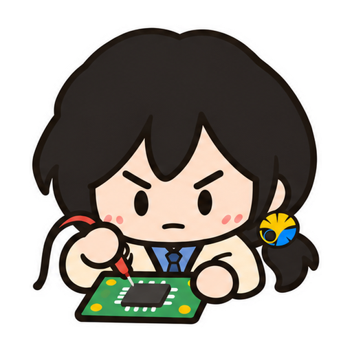
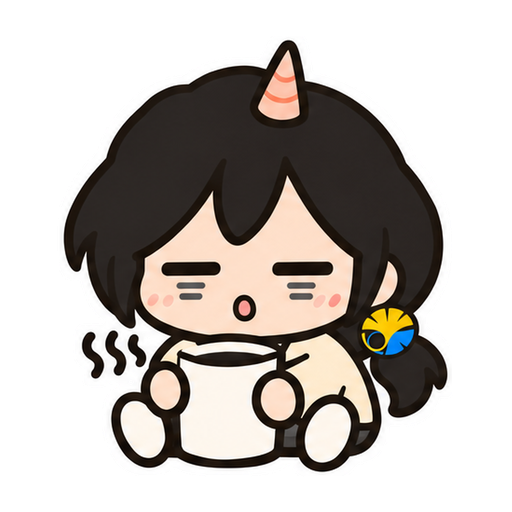

CHARACTER FILE · 角色介绍
✓ 真实存在的人物
东小杏
Dong Xiaoxing · 東小杏
你好，我叫东小杏！
女
情报理工学系研究科
喜欢薯饼
本乡校区出没
FILE 01
基本档案
性别
女
存在确认
真实存在的人物
所属
东京大学 情报理工学系研究科
导师
门本淳一郎（門本 淳一郎）
常出没地
工学部 2 号馆 / 理学部 1 号馆
名字由来
「东」取自东大，「杏」取自银杏发卡
喜欢的食物
薯饼
出身
不明
身高 / 体重
不明
过往经历
不明
FILE 02
第一目击记录
FIELD SIGHTING REPORT · HONGO CAMPUS
「据第一目击者——也就是本漫画的执笔者（同为情报理工学系研究科的石佚同学）所说，东小杏是有一天在本乡校区的银杏树底下捡到的。」

FILE 03
性格反差图鉴
元气甜妹
爱笑，见到熟人就会远远挥着团子手跑过来打招呼。

嘻嘻哈哈 · 偶尔有点坏
憋着鬼主意时会捂嘴偷笑，嘴角悄悄露出一颗小虎牙。

骄傲自负
实验或时序跑通时嘴角压不住，还要努力装作意料之中。

研究时很严肃
探头一碰到 FPGA 板子就安静下来，盯着波形一拍一拍地查。

熬夜嘴硬
嘴上说「我昨天真的很早就睡了」，头顶的小尖角已经出卖了她。
FILE 04
代表台词
得意
「我就说能过时序吧。」
认真
「等一下。把刚才复位那一拍的波形放大。」
憋坏
「嘘，先别告诉师兄，我想看他发现以后是什么表情。」
组会
「我们从这里往后看一拍。」
FILE 05
外形、穿搭与常用道具

银杏三瓣刘海 & 耳下双银杏发卡
黑发低侧马尾、额前两道 V 形分叉的银杏三瓣刘海；耳下马尾根部夹着无白底东大黄蓝双银杏（黄 4 瓣、蓝 2 瓣），配黑圆点眼、粉腮红与一颗小虎牙。
状态开关 · 熬夜尖角
平时头顶圆润光滑，只有没睡好时才会冒出粉白条纹小尖角；认真讨论或看论文时会戴上暖棕色细框圆眼镜。
常见穿搭
日常穿奶油色开衫外套 + 蓝衬衫蓝领带 + 深灰百褶短裙；正式场合换深蓝小西装；秋季外出常穿浅蓝色牛角扣外套配斜挎小包。
常备道具
FPGA 板
示波器探头
咖啡杯
笔记本
翻页笔
暖棕圆框眼镜